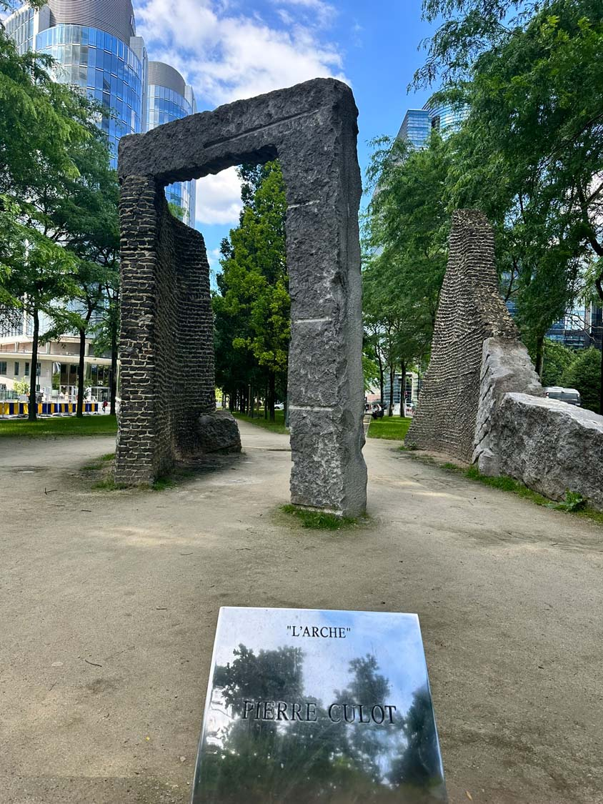

Il offre aux quartiers environnants un espace récréatif dont ils ont grand besoin. Les résidents locaux, les employés et les passants peuvent se promener à pied ou à vélo le long de sentiers et profiter de pelouses bien entretenues, d'espaces boisés, d'installations sportives, de terrains de pétanque, de tables de pique-nique et bien pluscore. Découvrez ce qui vous attend !
Établi dans le prolongement du bd Émile Jacqmain, le bd Roi Albert II est une longue artère qui relie la petite ceinture (boulevard Baudouin et avenue du Boulevard) à l’avenue de l’Héliport. Originellement dénommée bd Émile Jacqmain prolongé, l’artère est rebaptisée du nom du sixième roi des Belges en 1999 suite aux travaux de réaménagement du boulevard. Aménagés entre 1995 et 1997 suivant un projet de l’architecte-paysagiste Jacques Wirtz, les terre-pleins centraux du boulevard sont ponctués de plusieurs œuvres d’art dont L'Arche du sculpteur Pierre Culot. Constituée de briques et de pierre bleue, présentant un cimentage très apparent, l'oeuvre évoque les ruines d'un temps ancien. L'œuvre, appartenant à la Région de Bruxelles-Capitale, est gérée par les services de Bruxelles-Mobilité

Infos pratiques
Rue Willy de Bruyn Straat 00, 1000 Bruxelles, Belgique
heures d'ouverture
| Lundi | 14H – 19H |
|---|---|
| Mardi | 14H – 19H |
| Mercredi | 11H – 19H |
| Jeudi | 11H – 19H |
| Vendredi | 11H – 19H |
| Samedi | 11H – 19H |
| Dimanche | 11H – 19H |